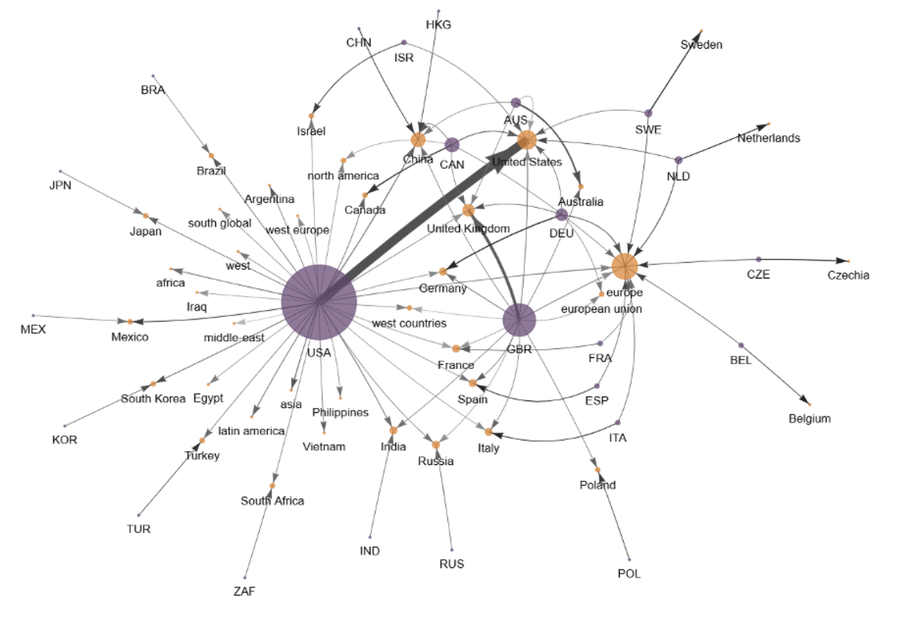

Although sociologists have highlighted the existence of global inequality in the academic field, we know less how global inequality among scholars are projected in content of academic knowledge. This paper investigates the structural inequalities in global sociology by focusing on the relationship between the geopolitical positionality of researchers and their research topics, sites, and characteristics. Using a dataset of 38,715 abstracts from SSCI-indexed sociology journals from 2004 to 2024, this paper reveals a profound geographic imbalance: core-affiliated authors predominantly study core nation with theoretical perspectives, whereas periphery-affiliated authors are significantly more likely to conduct empirical research focused on local and pragmatic issues. When peripheral sociologists study their places, they focus on environment, disability, or crime, while other topics are studied through an external gaze. This disparity suggests that inequality among sociologists does not merely manifest as a gap in citation counts but unfolds by shaping “desirable” versus “undesirable” stream of research. By connecting the political economy of knowledge with the production of ignorance, this paper sheds light on the unintended, but systematic, formation of blind spots that are sustained under the global academic hierarchy.